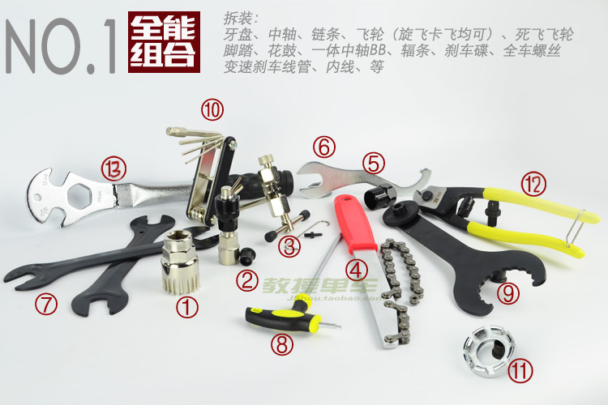

工具
| 编号 | 工具名称 | 工具用途 | 规格 | 备注 |
|---|---|---|---|---|
| 1 | 中轴套筒 | 拆装中轴 | 20齿，一般中轴适用 | 花键中轴(127以内轴长)适合 |
| 2 | 牙盘拉马 | 拆装牙盘 | 方孔、花键牙盘适用 | 拉马+顶帽 |
| 3 | 截链器及配件 | 拆装链条 | 单速，5~10速链条适用 | 截链器+备用顶针+链条钩子 |
| 4 | 飞轮扳手 | 拆装后飞轮 | 旋飞、卡飞都可以用 | |
| 5 | 飞轮套筒 | 拆装后飞轮 | 旋飞、卡飞都可以用 | |
| 6 | 死飞飞轮锁环钩 | 拆装死飞飞轮、脚踏 | 15mm开口可拆脚踏 | |
| 7 | 薄片花鼓扳手 | 拆装花鼓 | 13、14、15、16开口 | 2把互相配合才能正常拆卸 |
| 8 | T25梅花扳手 | 拆装刹车碟 | T25碟片螺丝扳手 | |
| 9 | 一体中轴BB扳手 | 拆装一体中轴BB | 外挂BB轴承拆装 | |
| 10 | 六角扳手组合 | 拆装全车螺丝 | 全车用六角螺丝规格 | |
| 11 | 辐条扳手 | 调节辐条 | 尺寸齐全 | |
| 12 | 剪线钳 | 线管剪裁 | ||
| 13 | 脚踏扳手 | 拆装脚踏 | 15、24mm，9/16"开口 |

变速
碟刹
- 山地车油碟注油步骤图文详解(图文)
- 安静吧，碟刹——让碟刹的吱吱声消失(图文)
- 碟刹的磨合以及其他一些
- 油碟的安装和调试
- AVID 油压刹车安装设定指南
- Avid_Juicy系列油碟安装和设置指南.doc
- Avid_Juicy油管长度裁剪和换油.doc
- AVID油压碟刹介绍及手柄剖析图
内胎选用原则
*
- 最好是内胎适用范围和外胎粗细匹配
-
内胎比外胎细：
- 内胎比外胎细一个级别还是可以使用的。小一号的，装胎方便，还轻量。
- 若细太多，应急是可以的! 但是内胎的壁会撑得非常薄，不安全! 长时间骑行容易出问题!
- 尽量不要出现内胎比外胎粗的情况，因为这样内胎容易褶皱、破裂。
- 气压:大苹果:70psi 马拉松:85psi kojak:95psi 芒果胎:115psi
自行车维护大全
http://tieba.baidu.com/p/1027054433
是否还记得你正骑着你的新车，兴奋的在街道上冲刺；是否你坐在家中，正想着出去骑车，但却发现你的爱车，性能已经不再如当日，它的刹车不再那么灵敏，它的变速性能不再那么的顺畅，骑着它，到处有叽叽嘎嘎的怪声；是否你曾经在野外，发现你的车子无法再继续骑乘，使得你必须走二十公里的路，推着车子回家。对于自行车的使用者而言，除非你有钱到每次车子出问题时，能够将它丢了，再买辆新车，否则自行车的保养与修理是不可避免的；另一方面，保养良好的车子，在骑乘时发生故障的机率，也必然会降低。在此所介绍的自行车维修技术，都是一般常用，且可以DIY(DoItYourself)的。
一般自行车的维护，可以分为以下几种：
- 正常骑乘使用；
- 短期(一周或十天)定期维护；
- 中期(一或二个月)定期维护；
- 长期(半年或一年)定期维护；
- 野外紧急修复
在此做为划分依据的时间，是以每日到一周两次以上进行自行车运动者的使用情形来分的，如果你进行自行车骑乘的频率较低，或者你的自行车使用极为频繁，那么可以将中短期的时间略加调整，以适合不同的骑乘状况。
工具说明
所谓工欲善其事，必先利其器，要进行自行车的维护工作，使用正确的工具是必须的，如果使用了不适当的工具，可能会造成工作上的困难，甚至自行车零件的损伤，因此以下对于一般维修所须用到的工具加以概略介绍。
-
必备基本工具
- 活动扳手或开口扳手：一般五金店便可购得，开口扳手使用上较方便，但是购买时须注意一般自行车所用的多为公制螺栓；而有一支活动扳手，在许多工作上是必须的。
- 内六角扳手：一般五金行均可购得，注意一般使用的均为公制。
- 螺丝起子：有一字与十字两种，五金行即可购得。
- 拆胎杆：拆卸外胎时使用，可在车店购得。
- 补胎胶与补胎片：补胎用，可在车店购得。
- 打链器：拆卸链条使用。
- 钢丝扳手：调整轮圈钢丝张力用。
- 润滑油：虽不是工具的一种，但是是维护自行车时所必备的，要准备黄油、链条油、及一般滑润油三种。
-
特殊工具(非必要，但有最好)
- 套筒扳手：使用于拆卸曲柄的固定螺栓，一般为14mm或15mm的。
- 曲柄拆卸器：用于拆卸曲柄或大齿盘。
- 链条扳手：将飞轮的链轮分解使用。
- 飞轮拆卸器：将飞轮拆下使用，不同厂牌的飞轮须用不同的拆卸器。
- 花鼓扳手：为薄片状的开口扳手，用来分解花鼓轴及轴承，一般为13mm至16mm。
- 前叉碗扳手：薄片状的开口扳手，用于装卸调整前叉碗，依前叉碗的尺寸不同而有不同。
- 橡胶锤：用来敲击卡住的零件，使其松脱。
- 剪线钳：钳口呈圆弧形，剪内线时才不会散开。
- BB工具组：用来拆卸调整中天心，依不同形式的中天心而有不同形式。
- 工作台：用于将自行车架起，以便进行维修工作。
- 调轮架：调整轮圈钢丝张力使用。
- 第三手工具：用于夹住刹车皮，在调整刹车时很方便。
- 洗链器：清洁链条使用很方便。
正常骑乘使用
正常的骑乘使用是不须要任何技术的，但却是在自行车的维护中，最重要且最基本的一项，在骑乘前，对自行车的车况加以检查，是很重要，也是常被遗忘的，因此在骑车前，记得做以下的检查：
- 检查骑乘姿势尺寸：如果你骑的不是专属于自己的车，记得在骑车前将座垫调至适当高度。
- 检查各部位螺丝松紧：检查前后轮及座垫杆的快拆是否锁紧了，检查车手是否已固定好，其他螺丝是否有松脱情况。
- 检查轮胎：检查胎压是否足够，不足的话将之打到适当压力，检查胎壁是否有裂痕、割伤胎纹是否已经过浅，如果必要则须更换外胎。
- 检查刹车：试拉前后刹车，检查刹车是否可以确实刹停。
- 检查前叉碗：刹住前刹车，将车身前后摇动，如有感到有晃动的间隙，表示前叉碗须重新调整。
- 检查变速器：起步后先试着分别变前变速与后变速，是否可以顺畅的变到各档速，是否会有奇怪的怪声。
短期定期维护
短期的维护是经常进行的，如果正常的使用自行车，在此阶段的维护上，是相当简单的，而此维护能够使你的车子常保良好状态，因此绝不可轻忽。
-
清洗车子：除了让你的车保持新车时的耀眼外，清洗车子也同时避免车架的锈蚀，而如果你在一场大雨中或泥泞中骑车，在骑完之后应尽快进行清洗的工作，洗车时要注意以下几点：
- 如果车身上的污泥不多，或多是灰尘而已，可以使用抹布擦干净，或是用大毛刷刷干净。
- 不可使用高压水柱来清除车身上的污泥，这方法虽然很有效率，但是可能将污水逼入轴承中，如此会造成轴承的损坏。
- 在车身上污泥很多的情况下，应使用刷子以及肥皂水将污泥洗净后，用清水冲干净，再用布擦干。
- 车一清洁干净后，记得检查烤漆是否有剥落，钢制车架烤漆剥落后会开始锈蚀，铝合金或碳纤维以及钛合金车架则不会锈蚀，只会影响美观。
- 在使用水洗过车子后，记得链条要擦干，并重新上油。
- 检查刹车皮：将刹车皮上的杂物加以清除，以保证其刹车力，若其磨耗已很严重，则须更新。
- 将线管重新上油：如果刹车或变速的动作不良，可能是内外线的摩擦过大，将外线由止管的部位取下，把内线涂布黄油，再重新装回，如果如此后动作仍然不顺，则考虑更换内外线管。
-
链条上油：
- 将链条上滴上润滑油之后，约十分钟之后，将链条外侧的油擦干净；
- 链条只要内部动作的部份有油就够了，外部多馀的润滑油会黏住灰尘，增加清洁的麻烦，因此最好擦干净。
- 另外，如果使用喷罐式的润滑油，记得在上完油后，把滴到其他部位的油擦干净。
中期定期维护
你的车已经为你服务了好一段时间了，现在应该将一些平时较常忽略的部位加以确实检查，以使其保持良好状况。
-
检查链条：
- 链条在长期使用后会发生拉长的情况，链条的节距为0.5英寸；
- 测量24节链条，长度应为12英寸若其长度已经超过正常长度1/8寸，则应更换链条。
-
清洗链条：
- 如果你的链条内部有许多的油泥，也许该清洗了；
- 清洗链条可以使用洗链器，或是把链条拆下，找一个容器，装满溶剂油，置入链条后，摇晃使其洗净，最后取出晾干上油。
-
检查飞轮及大齿盘：
- 若更新链条后，如果飞轮会有跳齿的情况，则更新飞轮；
- 若大齿盘的齿磨耗甚大，产生卡链的情况，也应更换；
- 检查大齿盘的固定螺丝，若松动则须重新锁紧。
-
检查轮圈：
- 检查气嘴孔及钢丝孔附近，是否有细微的裂痕产生，若有裂痕，则尽快更换轮圈；
- 将轮子抬起，旋转轮子，观察轮圈是否会摩擦到刹车皮，如果会，则须重新调整轮圈。
-
检查钢丝：
- 检查前后轮的钢丝是否有断裂的情形，若有则更换之，换钢丝后须重调轮圈；
- 调整轮圈时，观察轮圈偏摆的方向，如向右偏，则将轮圈该处附近的右侧钢丝放松，左侧锁紧，向左偏则反之；
- 轮圈左右的偏摆幅度应小于2mm。
- 检查车手：检查车手是否在车祸中发生变形，是否在立管锁紧的部位产生裂痕，如果是，则更新车手。
-
检查座垫及座垫杆：
- 取下座垫杆，检查是否有变形或裂痕，若无则上一层薄黄油后装回；
- 检查座垫是否有损伤，底下的支架是否完好，如果有问题，则加以更换。
长期定期维护
你的车已经使用了这么长的一段时间，它经历了各种状况，陪你到现在，应该是将那些一直在运转的部位加以大检查的时候了。
-
检查花鼓：
- 取下前后轮，检查钢丝孔附近是否有裂痕，如有则马上更换；
- 用手转动花鼓轴看看，再加以上下摇晃，如有感到间隙，或是非常的松动，则将花鼓轴分解，将内部的油清理干净，再重新装入新的黄油，把花鼓轴重新组合；
- 记得调整轴承应调至轴可顺畅转动，但不会有上下摇晃的间隙。
-
检查中天心：
- 取下链条，抓住曲柄左右摇晃，如有晃动，锁紧固定螺丝，若还会晃动，则须调整天心轴承；
- 将耳朵贴座垫上，旋转曲柄，听到的声音应是「呼-呼」很顺畅的声音，如果听到嘎拉嘎拉或其他的怪声，则表示轴承已损坏，应更换中天心。
-
检查踏板：
- 拆下踏板，使用15mm的开口扳手，注意左边的踏板是左牙的，拆时不要拆错；
- 踏板轴承不太须要调整，但仍须加以检查，如果使用的是卡式踏板，则检查其机构动作是否正常，并上油润滑。
-
检查变速器：
- 检查变速器的各个动作部位是否会晃动，如果会，表示变速器的磨损已相当严重，应该更换了，如果不会则在动作部位上油润滑。
-
避震器保养：
- 油压避震前叉应该拆卸，更换新的避震油；
- 优利胶形式的则检查优利胶是否已有裂痕或变形，如有的话则更新之；
- 避震器的维修，应洽询原购买厂商进行之。
-
检查车架：
- 检查所有烤漆，如有锈蚀状态至车架穿孔，则须更换车架；
- 如果车架受到冲击发生变形，则也应更换。
-
更新所有内外线管：
- 所有的线管经过长时间的使用，已经磨损，因此建议加以更换，以维持其性能表现。
野外紧急修复
当你在野外骑车时，车子发生了故障，使得你必须走路回家，实在是非常扫兴的事情，因此为了避免这种情况，出去骑车时千万记得要带着工具，不要认为意外不会发生，有备无患总是好的。以下介绍在野外常见到的故障状况以及修复的方法：
-
爆胎：这是常常发生的事情，发生爆胎时：
- 拆下轮子，用拆胎杆卸开外胎，取下内胎，如果有携带备胎，那么直接装上备胎即可；
- 如无备胎，便须要补胎了，补胎时先找出破洞，用砂纸或粗糙的东西将破洞附近略为研磨后，涂上补胎胶，稍待等其接近半干时，将补胎片贴上，加以压牢，然后打气检查是否还会漏气，最后装回内外胎，将气打足即可。